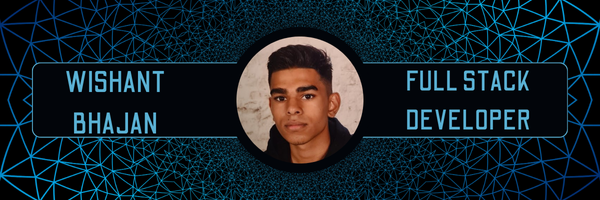

My name is Wishant Bhajan, and I am 20 years old. I am currently studying Computer Science at Rotterdam University of Applied Sciences.
I have a strong passion for technology and love experimenting with new tech innovations. In my free time, I work on various projects, ranging from developing functional websites and backend systems to creating complete software applications.
I am also very active in sports, training at the gym five days a week to stay physically and mentally sharp.
My curiosity drives me to continuously learn new things. Every week, I explore different areas such as networking, cybersecurity,
and new programming techniques to broaden my knowledge and skills.
My career goal is to become a successful full-stack developer, combining broad technical expertise with deep knowledge of cybersecurity and networking. I already have a solid foundation in these fields and am committed to further developing myself to build innovative and high-quality technological solutions in the future.
Education
I completed four years of secondary education (MAVO) at Montfort College and successfully earned my diploma.
After that, I pursued two years of higher general secondary education (HAVO) at the same school, gaining additional academic depth. Currently, I am enrolled in a four-year Bachelor's program in Computer Science at Rotterdam University of Applied Sciences.
Throughout my studies, I am further developing my skills in software development, cybersecurity, and networking.
Diplomas:
MAVO degree
2017 - 2021
Montfort College
Montessoriweg 14, 3083 AN Rotterdam
HAVO degree
2021 - 2023
Montfort College
Montessoriweg 14, 3083 AN Rotterdam
Propedeuse in Informatics
September 2024
Rotterdam University of Applied Sciences
HBO Bachelor's Degree in Informatics
2023 - 2027
Rotterdam University of Applied Sciences
IT Support Specialist – Studenten Aan Huis
📅 January 2024 – January 2025
✔ Assisted customers with software and hardware issues
✔ Installed and configured software
✔ Optimized system performance
IT Technician – GO Sharing
📅 August 2023 – June 2024
✔ Programmed hardware and troubleshooted technical faults in electric scooters
✔ Performed firmware updates and improved system efficiency
Founder & Web Developer – Self-Employed
📅 January 2024 – Present
✔ Built websites for clients using React, Java, TypeScript, Django, Python, and C#
✔ Developed scalable and responsive web applications
Stock Clerk – Jumbo
📅 June 2018 – July 2020
✔ Restocked shelves and assisted customers with questions
✔ Focused on accuracy, customer service, and teamwork